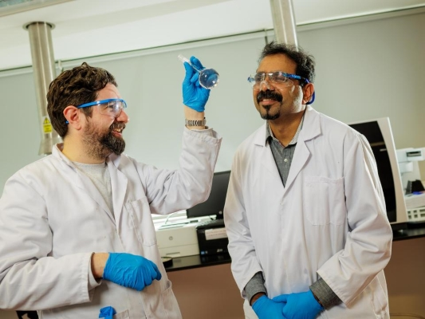

|
Qui nous sommesNous croyons fermement au rôle que joue l'enseignement supérieur dans le soutien d'une société prospère. Les établissements d'enseignement supérieur ne se contentent pas de préparer les étudiants à la voie qu'ils ont choisie, mais ils contribuent à créer la prochaine génération de citoyens leaders et capables de résoudre les problèmes. Les établissements d'enseignement supérieur poursuivent une mission distincte et durable dans notre société, en se consacrant uniquement à la création et à la diffusion de la connaissance. et à la diffusion de la connaissance. L'étendue et la richesse du tissu que constituent les établissements d'enseignement supérieur du monde entier font partie intégrante du progrès et du bien-être de l'humanité à long terme. |
Former les citoyens du monde de demainStanford offre à ses étudiants la possibilité de s'intéresser aux grandes idées, de franchir les frontières conceptuelles et disciplinaires et de devenir des citoyens du monde qui embrassent la diversité de pensée et d'expérience. Nous offrons aux étudiants des programmes académiques vastes et approfondis dans sept écoles et dans de nombreux domaines, notamment les arts et les sciences humaines, les sciences naturelles et sociales, l'ingénierie, le développement durable, la médecine, le droit, l'éducation et le commerce. L'étendue de l'excellence et la culture de l'innovation de l'université lui permettent d'attirer et de retenir les meilleurs professeurs du monde, qui offrent aux étudiants les connaissances et les outils nécessaires pour découvrir et adopter de nouvelles idées, et pour se préparer à une carrière réussie et à une vie au service des autres. La nécessité de principes éthiques forts pour atteindre le bien commun est intégrée dans toutes nos offres éducatives. L'éminent réseau d'anciens élèves de Stanford et la communauté très engagée des anciens élèves offrent aux étudiants un accès permanent à des mentors et à des pairs, qui aident à créer des partenariats avec le monde au-delà du campus, améliorant une fois de plus les contributions collectives de notre communauté. |
|
|  | Créer des connaissances dans un environnement de liberté académiqueLa recherche libre est le fondement de la recherche et de l'éducation. Animés par une profonde croyance en la liberté académique, nous posons continuellement des questions et développons de nouvelles idées pour faire avancer la connaissance. La recherche fondamentale, axée sur la curiosité, est au cœur de la mission de l'université, et les étudiants ont de nombreuses possibilités de rejoindre les chercheurs de Stanford dans des recherches qui développent de nouvelles connaissances et approfondissent la compréhension de nous-mêmes et du monde qui nous entoure. L'une des caractéristiques de Stanford est son écosystème étendu et dynamique de recherche interdisciplinaire. Avec les sept écoles de Stanford situées sur notre campus historique et de nombreux instituts servant de plaque tournante pour la collaboration entre les domaines académiques, les possibilités de percées révolutionnaires sont nombreuses et les résultats sont évidents. Stanford a compté 36 lauréats du prix Nobel depuis la fondation de l'université et est à égalité avec les autres universités de recherche pour le plus grand nombre de prix Nobel remportés depuis 2000. Nous sommes tout aussi déterminés à réfléchir activement aux implications éthiques de nos recherches et à leur application dans le monde en général. |
Faire progresser rapidement les connaissances vers l'applicationS'appuyant sur sa culture de collaboration interdisciplinaire qui favorise la découverte et l'innovation, l'université crée des « accélérateurs » pour aider les chercheurs universitaires en leur fournissant des fonds, des infrastructures, des ressources technologiques et des partenaires externes, afin que les découvertes faites à Stanford puissent devenir des solutions ayant un impact bien au-delà du campus. Parmi les exemples, citons l'Innovative Medicines Accelerator, qui vise à réduire le temps et le coût de fabrication des médicaments tout en veillant à ce que des traitements plus efficaces parviennent aux patients, et le Sustainability Accelerator au sein du Stanford Doerr of Sustainability, la première nouvelle école de l'université depuis 70 ans, qui témoigne de son engagement à être un leader en matière de recherche et d'éducation sur le climat. Des travaux sont également en cours au sein de la Graduate School of Education de Stanford pour accélérer la mise en place de solutions d'apprentissage plus efficaces et plus équitables, ainsi qu'au Stanford Impact Labs, qui crée un pipeline de recherche et de développement innovant pour les sciences sociales. |
 |
 |
Excellence dans les soins cliniquesNotre entreprise médicale, Stanford Medicine, offre un accès à des soins inégalés dans la région de la baie de San Francisco, tandis que ses chercheurs de classe mondiale font des découvertes révolutionnaires qui font progresser les soins médicaux dans le monde entier. Comprenant l'école de médecine, Stanford Health Care et Stanford Children's Health, notre entreprise médicale se concentre sur la prédiction, la prévention et la guérison des maladies en adaptant les soins de santé aux besoins des patients, et la guérison des maladies en adaptant les soins de santé à la biologie unique et aux circonstances de la vie de chacun d'entre nous. Stanford Medicine bénéficie à la fois d'une proximité physique et de liens étroits en matière de recherche avec les autres écoles de l'université, ce qui permet d'établir des partenariats solides entre des professeurs de renommée mondiale qui accélèrent l'obtention d'avantages tangibles pour les patients en matière de santé. |